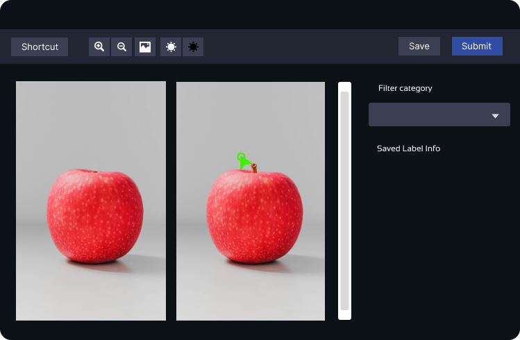
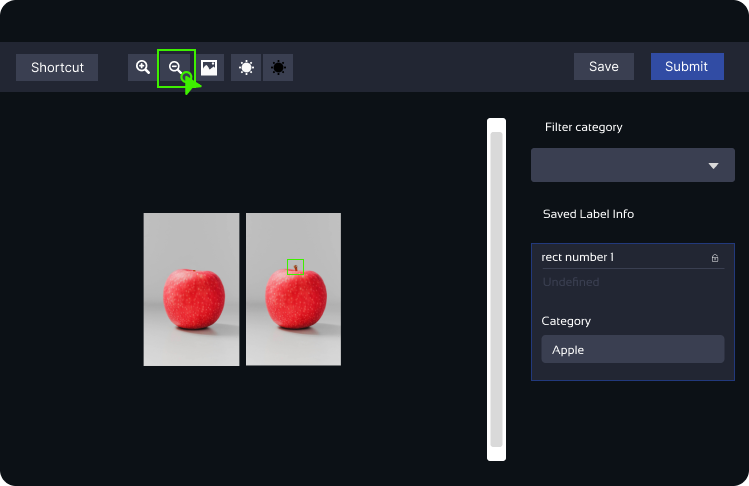
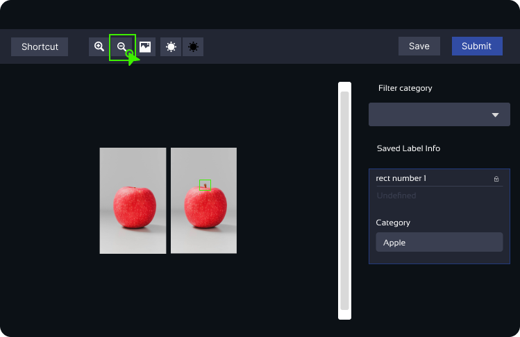

Spot the Difference Test Instructions
Welcome to the spot-the-difference test! This simple test requires you to identify the dissimilarities between two pictures that appear quite similar at first glance. Your task is to use an AI web tool called "Legacy Tool" to draw boxes around the identified differences.
Instructions:
- Identify the Differences: Look closely at the two images provided and identify any variations between them. It could be anything, like a missing cup or any other object that appears in one image but not in the other.
- Drawing the Boxes: To mark the differences, use the Legacy Tool by clicking and dragging your mouse over the area where you spot the difference. This action will draw a box around the identified dissimilarity.
- Selecting a Category: After drawing the box, you'll notice a dialog on the far right of the screen, called the "Category Menu." From the drop-down menu in this dialog, select "Difference" as the category for the box you drew.
- Repeat for Each Difference: Every time you identify a difference between the images, click and drag your mouse to draw a box around that area, and then choose "Difference" from the category menu.
- Submit and Move On: Once you have marked all the differences you can find, click on the "Submit" button to complete the current task. You will then proceed to the next test.



Other Functions of the Tool:
- Delete a Box: If you need to remove a box you drew, make sure it is selected, and then press the "d" key on your keyboard to delete it. Alternatively, you can press "d" right after drawing the box to delete it instantly.
- Zoom In and Out: The Legacy Tool provides buttons to adjust the image size for better viewing. Use the "Zoom In" and "Zoom Out" buttons in the tool menu. Alternatively, you can use the keyboard shortcuts "+" and "-" after "0" on the keyboard to zoom in or out.


 

Important Note:
There are a total of two images in this spot-the-difference test.
We wish you the best of luck in completing the test! If you have any questions, feel free to ask the instructor.
Once you have finished identifying the differences, you can move on to the next test. Enjoy the challenge and have fun!
Please remember to close the tab after you have finished with the test to return to this page
Start Test 2